Nothing here was picked because it was popular. Each entry answers a question I actually had,
and where two things did the job I wrote down why the one I kept won. Where the honest answer is
"this is the part I would do differently", that is the entry.
The map
Grouped by job rather than by namespace or vendor. The only arrows drawn are the ones that
are the actual design; everything else is just "this is in the box".

The shape of it. One reconciler writing from git, four controls between the
agent and that writer, and every notification leaving through Discord or a push.
Read it left to right as a question: what is true, what runs, what stops the agent changing the
first thing, what notices, what is allowed to act, and how it reaches me.
The tools
Running the cluster
Tool
Why this one
MicroK8s
The distribution the nodes run, installed from a snap. Snap means the
operating system's install and its upgrades are one mechanism, and a node is
something I can rebuild from a playbook instead of a machine I have to keep alive.
Flux CD
The only thing that writes to the cluster, and it is what makes the rest survivable:
it reconciles continuously, so anything not in a merged commit gets reverted. That single
property is why "the agent can try things" is a bounded risk rather than a hope.
Flux Operator
Declares the Flux installation as a Kubernetes object, in git. Without it the bootstrap
has a step I ran by hand, and a hand-run step is the one nobody can reproduce.
Kustomize and Helm
How a directory becomes YAML. Overlays and pinned chart values, so the difference
between two environments is a small diff rather than a branch of copy-pasted files.
Getting traffic in, and certificates out
Tool
Why this one
Traefik
Ingress. Its own CRD puts routing, TLS and middleware in one object instead of three
annotations, and one wildcard certificate in a single store serves every route — so
adding a hostname is not also a certificate problem.
MetalLB
Gives me real LAN addresses for LoadBalancer services. Worth it because ingress then
behaves like ingress, instead of me maintaining a tunnel or port-forwards on the
router.
cert-manager
Issues and renews. The failure I care about is an expired certificate, which looks
exactly like an outage to everyone except me, so renewal has to be somebody else's job.
external-dns
Publishes the DNS record from the same object that declares the route. Small, and it
removes a manual step from every hostname I add.
Storage
Tool
Why this one
Longhorn
Replicated block storage across the nodes, with no separate SAN to buy or maintain.
It is the heaviest thing in here and I would still keep it: a node can die without taking
a volume with it, and "the disk went with the machine" is a failure mode I have already
had once.
Secrets
Tool
Why this one
1Password Connect, and External Secrets Operator
The only path by which a secret value reaches a pod. Nothing is copied into git and the
agent has no read path at all — it can see that a secret exists, not what is in it.
One path in, because a second path is a leak nobody has found yet.
Stakater Reloader
Restarts a workload when the secret it consumes changes. Without it the operator
rewrites the Secret and a Helm-rendered Deployment never notices, which is the kind of
bug that survives for months because nothing is wrong.
Keeping the agent honest
Tool
Why this one
Kyverno
Admission policies, including two that watch the agent's own identity. It is the
answer to the failure mode that actually worries me: not a malicious agent, but me
widening its permissions by accident at the end of a long day. It refuses the change
instead of reporting it, and the policies have fixtures in CI that must refuse.
NetworkPolicy
Default-deny in both directions in every namespace. It is also the single most common
cause of a connectivity bug I will ever chase, and the reason that bug is diagnosable is
that the answer is a file in the repository rather than a guess about the prompt. See
Guardrails.
Noticing problems
Tool
Why this one
kube-prometheus-stack
Prometheus, Alertmanager and Grafana as one chart. I did not choose the pieces
individually because what is actually portable is the rule format and the query language,
and those live in this distribution's ecosystem.
Grafana Alloy, and Loki
Log shipping and storage. Short retention on purpose: hours answers "what happened last
night", and weeks is a cost I have decided not to pay yet. The gap is real and it is
listed as a weakness rather than described as a plan.
blackbox-exporter
Probes every published hostname from outside the cluster, so "is it up" is a
measurement rather than an assumption. It is also the cheapest possible check that
survives a certificate going stale in silence.
Trivy Operator
Image findings delivered as Kubernetes objects. That is the whole reason: as CRs they
query, alert, aggregate and get triaged like everything else, instead of living in a scan
report somebody reads once.
Falco, with falcosidekick
Runtime syscall detection — what a process does after it starts, which
admission and image scanning structurally cannot see. sidekick normalises the output
into Alertmanager so runtime detections route and group through the same pipeline as
everything else instead of arriving somewhere nobody reads.
Acting
Tool
Why this one
Hermes
The agent. Read-only RBAC in the cluster and a GitHub App identity in git, so its only
write is a pull request and the author of a change is never the same identity as the
reviewer. Everything it has done is on Why.
Redis
One job: the dedupe gate on alert-driven agent runs. It holds a key per announced
alert, which is what stops one standing alert from costing an agent run every hour,
forever. A component this small is justified by the bill it prevents.
Actions Runner Controller
Ephemeral CI runners: one per job, no accumulated state, and they are pods in the
cluster the repository describes. That last part is the argument for it — CI is tested
against production's network rules rather than a hosted runner's.
Renovate
Opens a pull request when a newer version exists, hourly, one version at a time. It
proposes and never merges, so an update becomes a reviewed change like any other. See
The loop.
Crossplane
Manages the GitHub webhook as a Kubernetes object. This exists because the webhook URL
used to live in a repository secret that a human had copied by hand and nothing could
rotate — a credential with no lifecycle. See Alerting.
Discord, with ntfy for criticals
The whole human interface. Channels rather than one feed, because a policy finding and
a paging incident are different kinds of message and should not share a thread. Every
producer holds one channel webhook and nothing else.
The hosts
Tool
Why this one
Ansible
Node configuration lives in the same repository as the manifests, and resolves its
secrets at run time so nothing lands in git. The split that matters: the operating
system is a machine problem and the cluster is a set of pinned versions, and people
usually ruin both by treating them as one.
Also present, and unremarkable enough to skip a row: metrics-server for autoscaling, an SMB
CSI driver for the NAS, a registry mirror, an identity provider for single sign-on, and a
container registry of my own.
What I would do differently
The distribution was a lateral move. I moved off one Kubernetes
distribution and onto another, which cost days and bought nothing. Pick a distribution on its
merits once.
Log retention is the cheapest thing I skipped. Hours of history is the
single gap that has made an investigation genuinely hard, and it is not an expensive
problem to solve.
Two things here do one job between them. The cluster grew faster than the
questions it was being asked, and that shows up as components whose only justification is
that they were easy to add.
The agent has no way to be useful without a human. That is the design,
not a limitation I have run out of road on, but it does mean every fix waits for me.
The test I apply to any addition
If a component cannot be justified by a question I have actually asked, it does not go in.
That is a slow way to build and it means the list stays short enough to still be read.